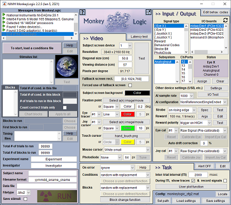

The National Institute of Mental Health (NIMH) is part of the National Institutes of Health (NIH), a component of the U.S. Department of Health and Human Services.

NIMH MonkeyLogic is a MATLAB-based software tool for behavioral control and data acquisition. It allows users to design sensory, motor, or cognitive tasks with a familiar, high-level language and execute them with high temporal accuracy. Many stimulus types are available for task composition and data can be collected during tasks from various signal sources. The timing of events can be synchronized with external devices via event code exchanges.
The National Institute of Mental Health (NIMH) is part of the National Institutes of Health (NIH), a component of the U.S. Department of Health and Human Services.